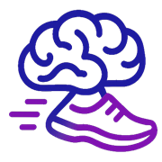

Julia Meshcheryakova
AI/ML engineer · Data scientist · Forward-deployed engineer · London
AI/ML engineer, data scientist, forward-deployed engineer (you name it) with an activist mindset. 15 years in IT, 8 of them in machine learning, mostly on projects that improve lives, from healthcare and pharma research to clean energy.
I'm good at turning a messy real-world problem into a technical one. Once I was handed 3D segmentation of teeth as an ML task and solved it with plain algebra and geometry instead. Standing next to the whiteboard drawing teeth was one of the best moments of my life. Now I want to go deeper: closer to research and to the models themselves.
Outside work I run, play intellectual games and sometimes turn the two into a project. My guilty pleasure is wordplay naming and logos inventing.
Featured

🦸 Cutting Corners Hero
AI security training, upside down. No list of don'ts. Players compete to pitch the most believable reckless shortcut for an AI agent, guess how it will backfire, and then see what actually blows up.
An LLM judge scores realism, danger, creativity and how well you called the fallout. Every scenario comes from a published taxonomy of attacks on AI agents and maps to the OWASP Top 10 for LLM and for Agentic Applications.
It's played live, with a facilitator. Want it at your event? Everything you need is on GitHub.
More projects

Quizrun
A hybrid sport I co-invented. You run about 5 km and solve lateral-thinking puzzles at checkpoints; every correct answer takes time off your finish, so a sharp thinker can beat a faster runner.
500+ participants from 60+ cities in 10+ countries so far. I build the app. Next goal: make it an Olympic sport.
Food Enough WIP
Your lens on any menu. Scan it, in any language, and see what you can actually eat, then get help choosing.
It grew from my own pain: I'm a picky eater with choice paralysis. Shipping soon ;)
🏃 CogniRun WIP
Built at a hackathon. Run 3 km, and after every kilometre the app asks you a question: trivia, then logic, then maths. Answer faster, score more. At the end you see your route, pace and how you compare.
Next: a proper engine for growing healthy habits, gamifying running and memorisation.
🚢 Battleship: New Wave
The classic game, remade for the browser. From my zoo of pet projects.
Volunteering
🏅 London Marathon 2027 for the MS Society
I only started running in 2024, and this is my second attempt to make my first marathon meaningful. The MS Society isn't a random charity that happened to have a spot: I want to help MS research, with money and with my skills.
♻️ Eco-activism
- eco-dvor & eco-taxi, Voronezh. I automated route planning for the volunteer coordinators (30% faster runs). We grew from 15 to 50 collection points and a 5k community, and in the end a commercial recycling company opened in the city.
- etonemusor.ru, a crowdsourced recycling map. I brought in data from 5+ eco-projects: 100+ new points.
- Green Green, Yerevan. Organised 5 clean-ups.
🧠 Community
- IT-Cup, an intellectual games tournament for IT people. Organised it 7 times, won it once.
- TechLeaders. Mentored in ML; the programme became DataArt's ML internship.
- Stack Overflow. 3200+ reputation, answers seen by ~180k people.